01-settings-overview-desktop.png
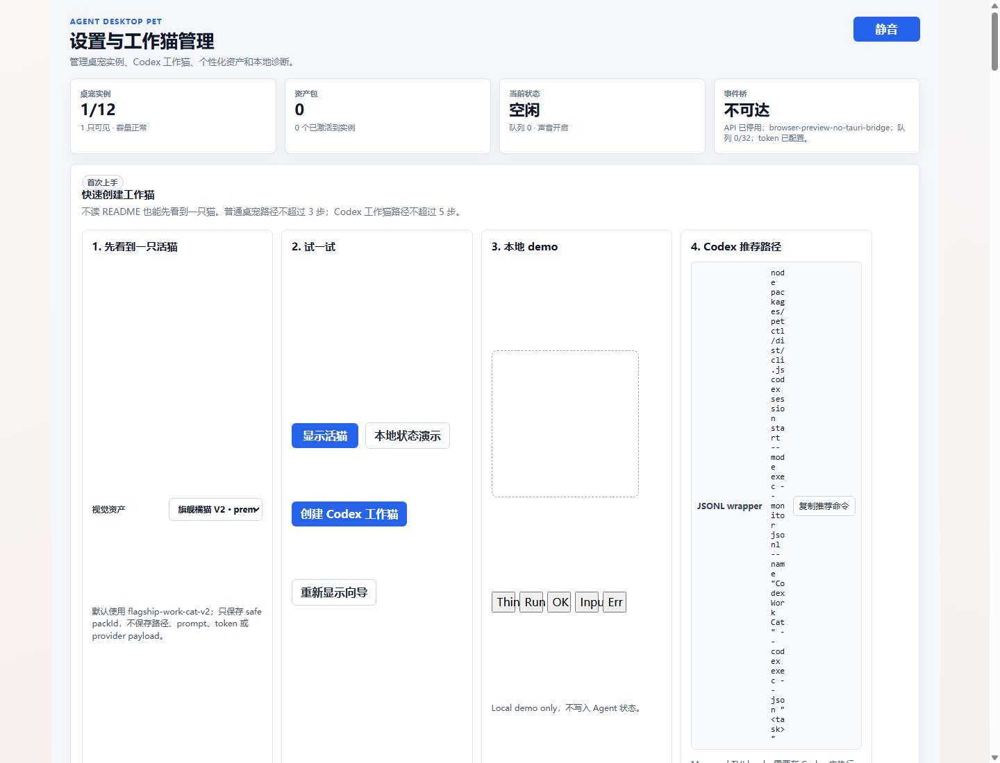
日期：2026-07-01。本报告用 Headless Chrome 自动截图和命令结果审计当前阶段。结论从证据出发：V40.3R3 审计链路可复核，但 V40 目标体验仍未完成。
本报告不会声明任意猫自动生成已就绪、Petdex 同等水平、provider 集成完成、WebUI/ComfyUI 路线可用、3D/生产发布/Windows/跨平台已就绪。
| 生成时 Git HEAD | 1558768888a0 |
|---|---|
| HTML 报告 | docs/V40.x/evidence/v40_3r3-automated-acceptance-report-2026-07-01.html |
| Markdown 审计 | docs/V40.x/evidence/v40_3r3-stage-audit-2026-07-01.md |
| 结果 JSON | docs/V40.x/evidence/v40_3r3-automated-acceptance-2026-07-01/test-results.json |
| 截图目录 | docs/V40.x/evidence/v40_3r3-automated-acceptance-2026-07-01 |
docs/active/agent_desktop_pet_prd_v40.mddocs/V40.x/v40-target-architecture.mddocs/V40.x/v40-acceptance-plan.mddocs/V40.x/v40_3r3-detailed-development-and-acceptance-plan.mddocs/V40.x/evidence/v40_3r3-candidate-source-decision-2026-06-30.mdpnpm --filter desktop exec node --import tsx ../../scripts/v40_3r3_stage_audit_report.mjspnpm --filter desktop testpnpm --filter desktop checkpnpm --filter desktop buildpnpm --filter @agent-desktop-pet/petctl testpnpm --filter @agent-desktop-pet/petctl buildpnpm --filter desktop exec node --import tsx ../../scripts/v40_3r3_candidate_source_decision_smoke.mjs| 阶段 | 状态 | 审计说明 |
|---|---|---|
| V40.1A Direct Local Runner | passed scoped | 只有 runner readiness，不证明视觉质量 |
| V40.2 no-WebUI contract | passed scoped | 合同可校验安全摘要和失败原因 |
| V40.3 prompt-only | failed | 视觉审查失败 |
| V40.3R img2img | failed | 视觉审查失败 |
| V40.3R2 identity-conditioned | failed | 真实候选生成完成但视觉审查失败 |
| V40.3R3 candidate source | blocked scoped | 没有可信候选来源，V40.4 仍 No-Go |
| 审计项 | 覆盖状态 | 说明 |
|---|---|---|
| PRD target experience | covered | V40 high-quality image-to-action target remains unmet and blocked. |
| Architecture state | covered | Direct runner/contract exists; normalization/product gates remain locked. |
| Code checks | covered | desktop test/check/build and petctl test/build recorded. |
| Visual evidence | covered | 8 headless screenshots, including failed candidates and V40.3R3 decision. |
| Host sample probe | covered-not-accepted | 3 synthetic host cat images generated local template GIF assets; this is not accepted as V40 image-to-action readiness. |
| Claim/security scan | covered | report and audit scans passed with no hits. |
| Native desktop overlay | not covered | headless browser preview evidence cannot prove native overlay behavior. |
| High-quality V40 assets | not achieved | no accepted candidate source and no V40.4 entry. |
| 命令 | 结果 | 摘要 |
|---|---|---|
desktop test |
passed | pnpm --filter desktop testtests 361, pass 361, fail 0; exit 0 |
desktop check |
passed | pnpm --filter desktop checkTypeScript check passed; exit 0 |
desktop build |
passed | pnpm --filter desktop buildTypeScript check passed; frontend bundle built; exit 0 |
petctl test |
passed | pnpm --filter @agent-desktop-pet/petctl testtests 71, pass 71, fail 0; exit 0 |
petctl build |
passed | pnpm --filter @agent-desktop-pet/petctl buildcompleted without reported failure; exit 0 |
V30 semantic gate |
passed | pnpm --filter desktop exec node --import tsx ../../scripts/v30_semantic_animation_gate_smoke.mjsV30 semantic gate passed; exit 0 |
V39 final gate |
passed | pnpm --filter desktop exec node --import tsx ../../scripts/v39_8_final_gate_smoke.mjsV39 scoped final gate passed; exit 0 |
V40.3R3 candidate source gate |
passed | pnpm --filter desktop exec node --import tsx ../../scripts/v40_3r3_candidate_source_decision_smoke.mjsV40.3R3 blocked decision recorded; exit 0 |
截图覆盖设置页、资产图库、V39 fallback、照片到 2D 向导、诊断边界、失败候选、V40.3R3 决策和移动端布局。

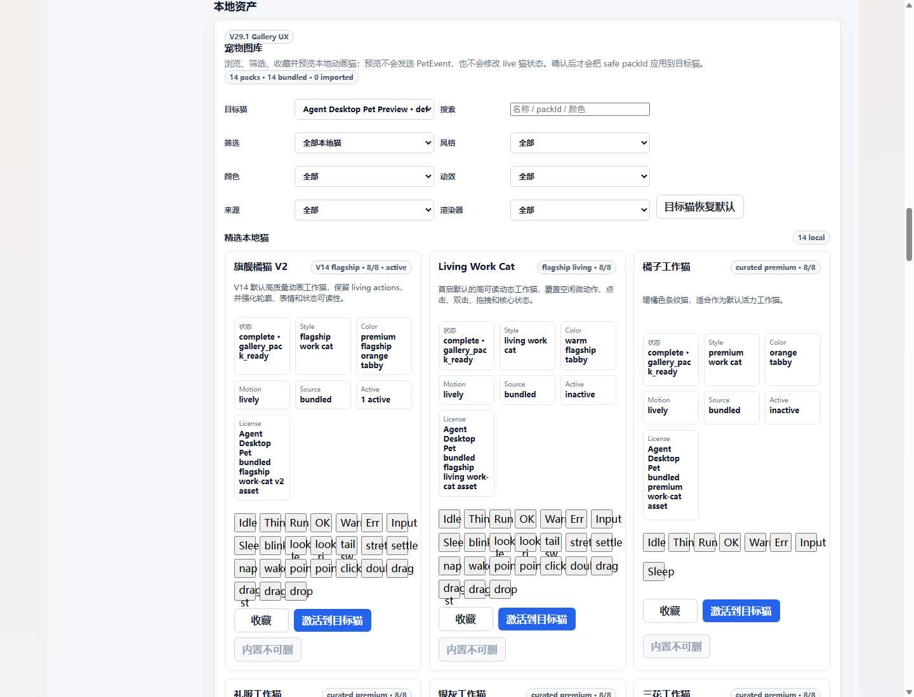
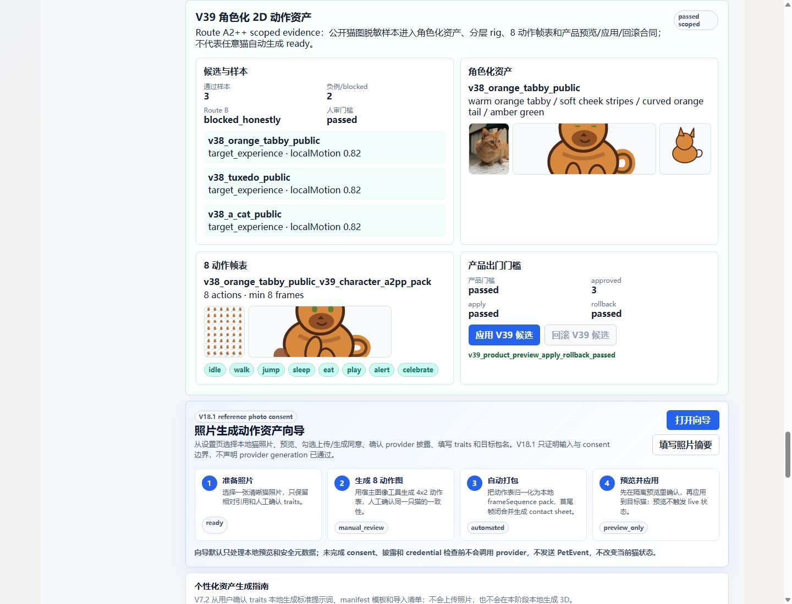
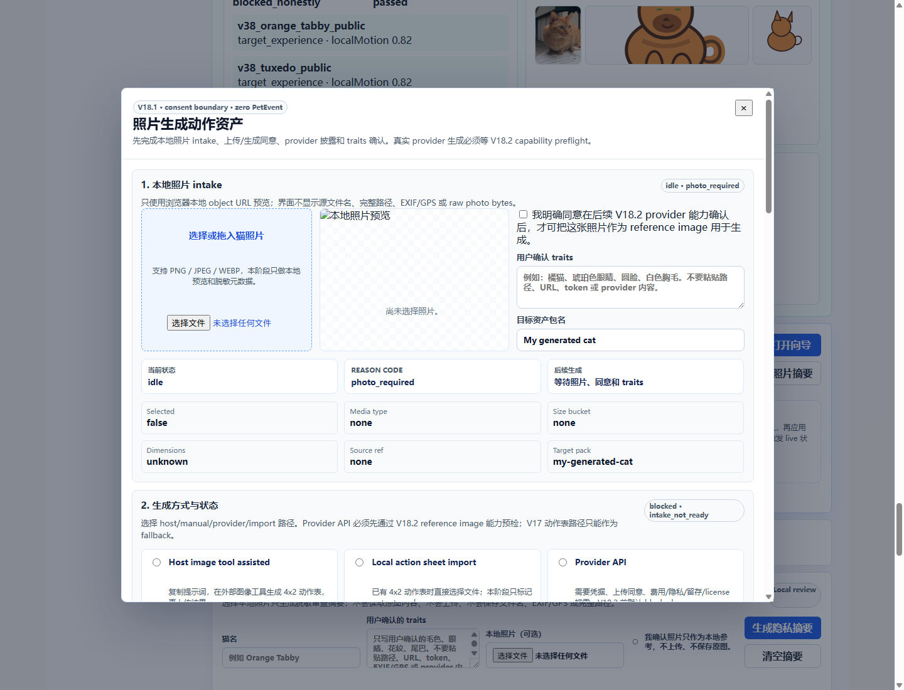
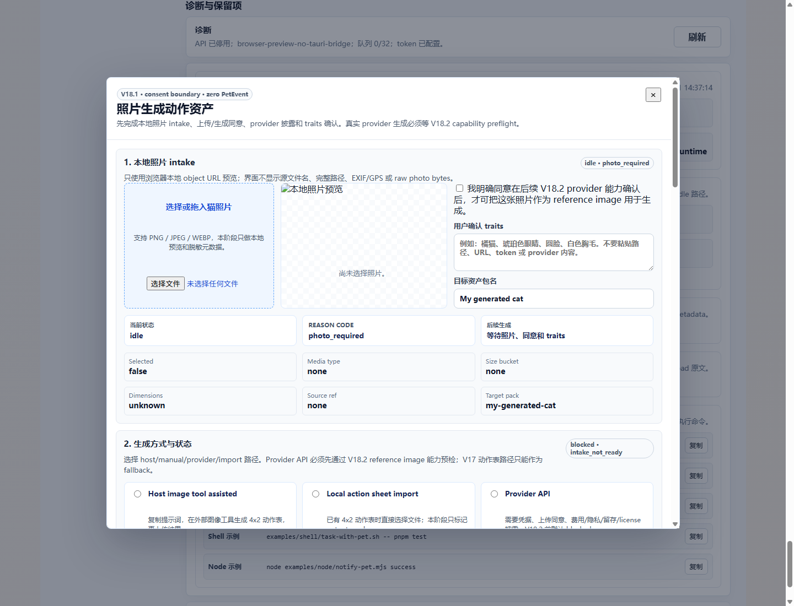
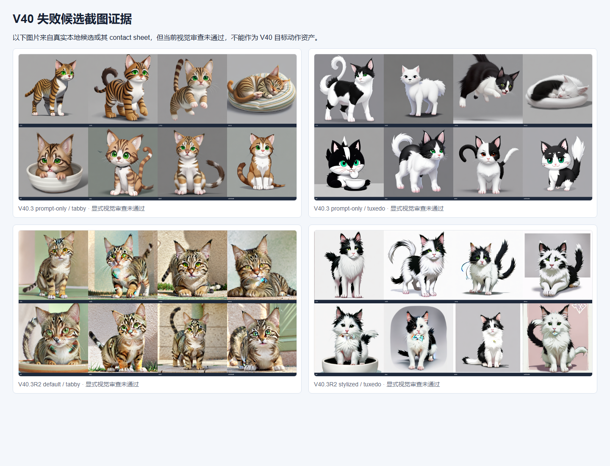
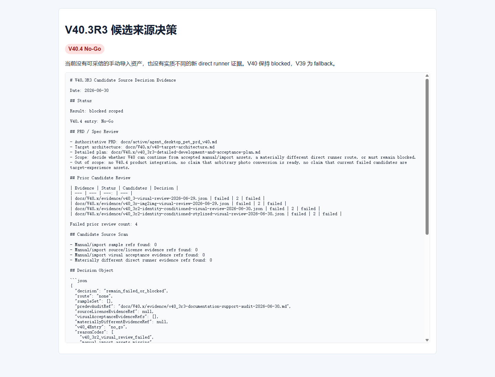
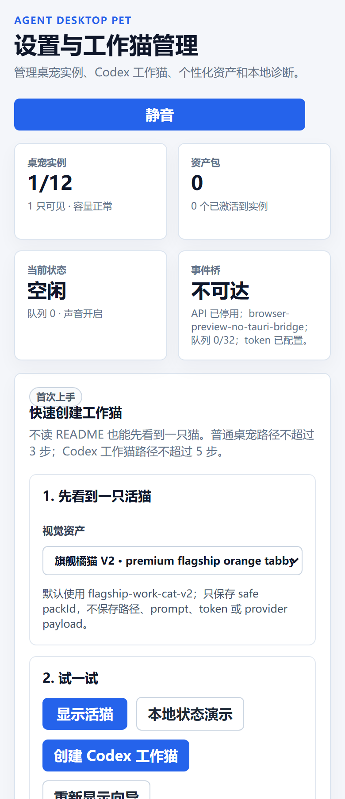
本节按用户要求使用宿主本地进程生成不同花色猫图，并生成对应动作 GIF/contact sheet。审计结论必须收窄：这些资产来自合成输入图和确定性模板，不是模型从任意真实猫照片理解并生成的高质量动作资产。
| 探针状态 | generated_not_accepted |
|---|---|
| manifest | docs/V40.x/evidence/v40_3r3-automated-acceptance-2026-07-01/host-synthetic-image-to-animation-probe/manifest.json |
| 样本数 | 3 |
| 每样本动作数 | 8 |
| 边界 | This host-process probe is evidence of local controlled asset generation only. It is not V40 high-quality image-to-action acceptance. |
host-orange-tabbycoat: tabby · route: host_synthetic_template_probe · decision: not_accepted_for_v40_target
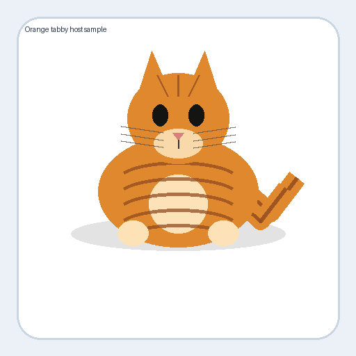
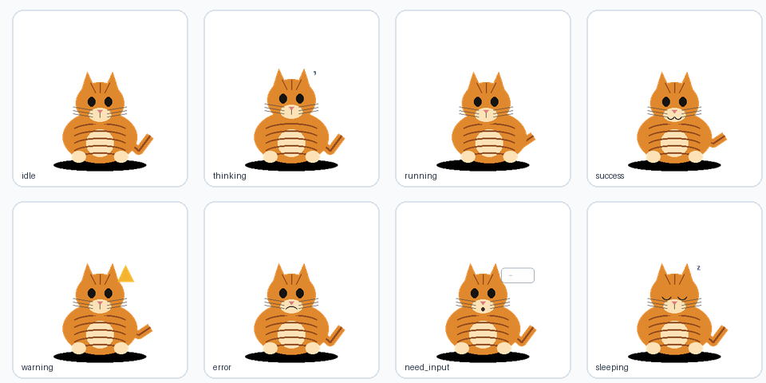
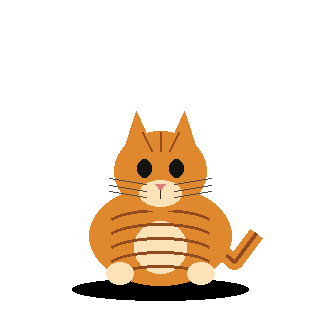
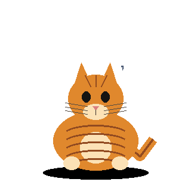
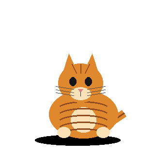
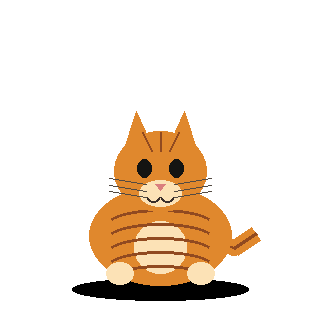
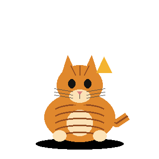
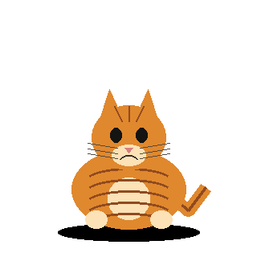
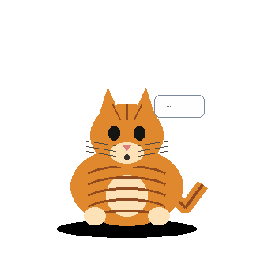
host-tuxedocoat: tuxedo · route: host_synthetic_template_probe · decision: not_accepted_for_v40_target
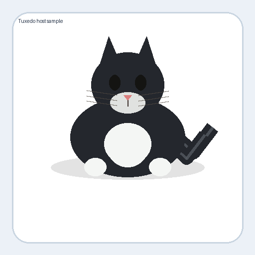
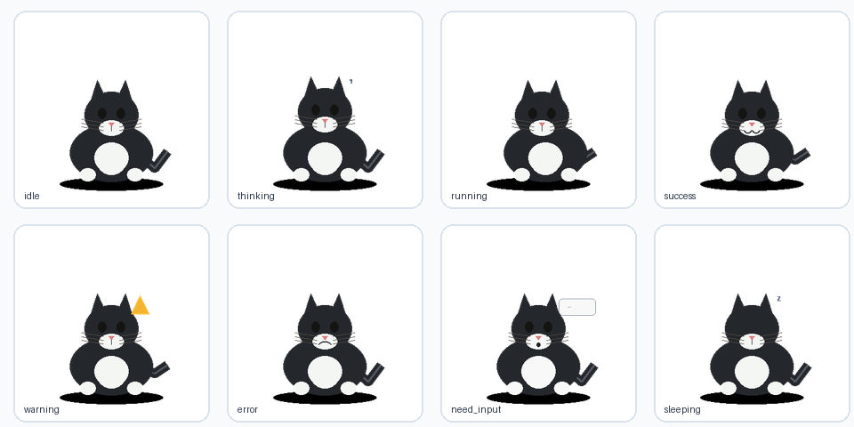
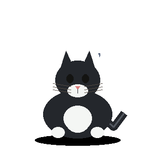
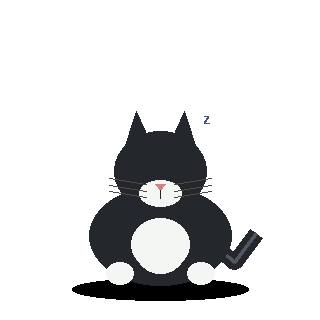
host-calicocoat: calico · route: host_synthetic_template_probe · decision: not_accepted_for_v40_target
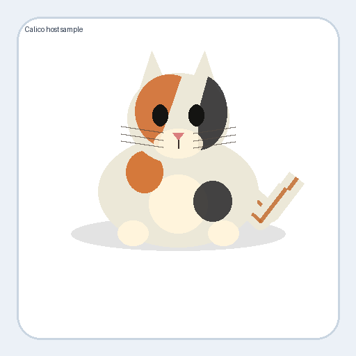
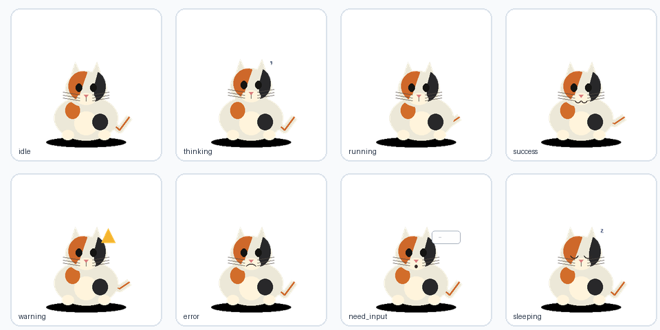
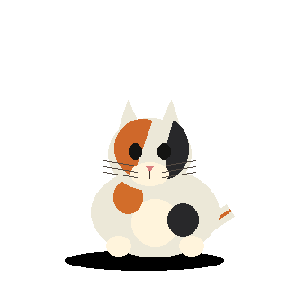
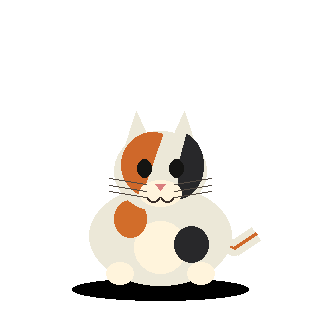
| 检查项 | 结果 |
|---|---|
| 截图均存在且非空 | 通过 |
| 设置页标题 | 设置与工作猫管理 |
| 导航链接数 | 6 |
| V39 fallback 面板 | 可见 |
| 照片到 2D 向导 | 可打开 |
| V40.3R3 blocked 决策 | 已记录 |
Critical · V40 没有可进入 V40.4 的候选来源；当前不能交付高质量 2D 图生动作资产。
Critical · 现有 V40 候选截图中动作语义、身份一致性或桌面宠物尺度表现不足，不能当作目标体验资产。
Medium · 本轮可视化验收使用 headless Chrome 与 browser preview fallback；它验证设置页路径，不验证真实桌面 overlay。
Medium · 当前用户可体验路径仍主要是 V39 fallback 与既有资产管理/向导界面。
Low · 移动端截图证明页面可渲染，但不覆盖真实触屏设备输入差异。
阶段性审计结论：审计材料与自动化证据可复核，当前阶段的真实产品结论是 NEEDS WORK。V40 还不能支撑高质量图生 2D 动作资产目标，不能进入 V40.4。